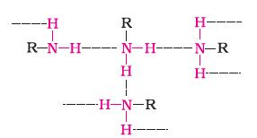
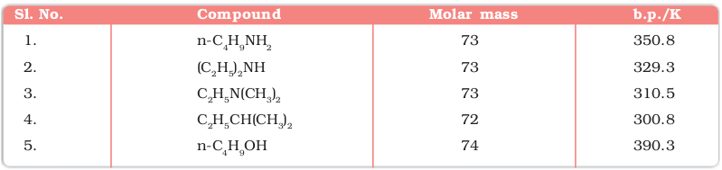

The lower aliphatic amines are gases with fishy odour. Primary amines with three or more carbon atoms are liquid and still higher ones are solid. Aniline and other arylamines are usually colourless but get coloured on storage due to atmospheric oxidation.
Lower aliphatic amines are soluble in water because they can form hydrogen bonds with water molecules. However, solubility decreases with increase in molar mass of amines due to increase in size of the hydrophobic alkyl part. Higher amines are essentially insoluble in water. Considering the electronegativity of nitrogen of amine and oxygen of alcohol as 3.0 and 3.5 respectively, you can predict the pattern of solubility of amines and alcohols in water. Out of butan-1-ol and butan-1-amine, which will be more soluble in water and why? Amines are soluble in organic solvents like alcohol, ether and benzene. You may remember that alcohols are more polar than amines and form stronger intermolecular hydrogen bonds than amines. Primary and secondary amines are engaged in intermolecular association due to hydrogen bonding between nitrogen of one and hydrogen of another molecule. This intermolecular association is more in primary amines than in secondary amines as there are two hydrogen atoms available for hydrogen bond formation in it. Tertiary amines do not have intermolecular association due to the absence of hydrogen atom available for hydrogen bond formation. Therefore, the order of boiling points of isomeric amines is as follows:Primary > Secondary > Tertiary
Intermolecular hydrogen bonding in primary amines is shown/
Intermolecular hydrogen bonding in primary amines
Boiling points of amines, alcohols and alkanes of almost the same molar mass are shown.
